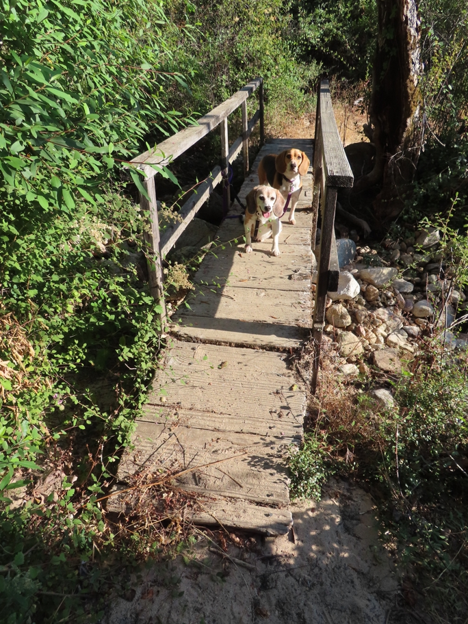

In the non-motorized Nature Area hidden inside the Hollister Hills State Vehicular Recreation Area. This part of the SVRA was donated to UC Berkeley for research on the San Andreas Fault, which runs right through the SVRA's main entrance and WNW through the SVRA. The Nature Area is about a mile southwest of the fault, on the Pacific Plate. It is full of old, crumbling exposed granite which the fault brought here from the Sierra Nevada mountains.
Halley Beagle Wallace Beagle